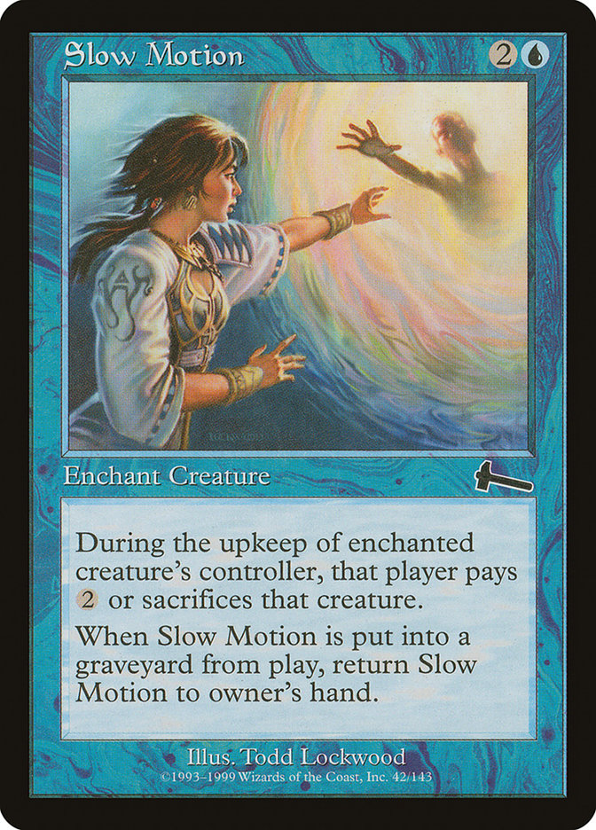

Quiz: the Eternal Struggle
part of Pulled Fang #12
The Rules
- Have fun!easy quizzes are not fun :)
- Learn something new!not easy if the quiz is easy
- Score points and win prices.
- Feedback welcome: please use blank papers to make suggestions about this quiz.
- Leave your score sheets on the tables!needed for quiz quality metrics
The Rules (cont.) #2
- no electronic devices, or other external sources of information are allowed to look up answers during quiz rounds
- the quizmasters bear the responsibility to arbitrate
- correct answer = 2 points, partial or bonus answer = 1 point unless stated otherwise
The Rules (cont.) #3
- after each round, you have one minute to hand in your score sheet
- answers accepted in English, Czech, or Slovak unless stated otherwise
- hints are in the details, please pay attention
- if you don't know the correct answer, write something funny :-)
round 1 / topic 1
Do you know your crypt cards?
3-6Identify a VTES crypt card:
aus dom FOR OBT POT
aus dom FOR OBT POT
Percival
Identify a VTES crypt card:
obf AUS CEL POT QUI
obf AUS CEL POT QUI
Massassi
Identify a VTES crypt card:
Osric Vladislav
Identify a VTES crypt card:
Szechenyi Jolán, Mother of Horrors
Identify a VTES crypt card.
For a partial answer, who’s in the photo (full name)?
For a partial answer, who’s in the photo (full name)?
Kiradin, Agnetha Fältskog of ABBA
round 1 / topic 2
Do you know your library cards?
Magic of VTESIdentify a VTES library card:
Island of Yiaros
Identify a VTES library card:

Movement of the Slow Body
Identify a VTES library card:
Unleash the Hounds
Identify a VTES library card:
Dive into Madness, Descent into Darkness
Identify a VTES library card:
Detect Authority
round 2 / topic 3
Do you know your crypt cards?
part 2 - all groups includedWhat are the full names of these vampires? No typos allowed for the comlete answer.
For a partial answer, identify clans of all three.
For a partial answer, identify clans of all three.
Paolo Sardenzo (Giovanni), Joshua Tarnopolski (Brujah), Aredhel (Salubri antitribu)
What are the full names ot these vampires? No typos allowed for the complete answer.
Miller Delmardigan, Teacher of Bahari; Jeremy "Wix" Wyzchovsky
What are the rule texts of these vampires?
Camarilla primogen: Appolonius gets one optional press each combat. +1 bleed.
Independent: After Bez leaves the ready region, discard 2 cards at random.
Only two vampires in VTES have DOM DEM PRE (among other disciplines). Name at least one.
Bonus: Only one vampire in VTES has FOR NEC OBT. Which one?
Bonus: Only one vampire in VTES has FOR NEC OBT. Which one?
Esau, Johannes Castelein, Luca Italicus
Name all vampires with Flight that are not Gargoyles.
The Kikiyaon, Count Vladimir Rustovitch, The Dracon
round 2 / topic 4
Random round
there's a method to the madness
Which VTES artist is known for frequently using photographs in his collages, sometimes overlaying each other?
Lawrence Snelly
Name all vampires from group 7.
Carmelita Neillson, Okulos, Victoria Ash, Kevin Jackson
When was the V:EKN community founded? For a partial answer, tolerance of one year.
The V:EKN was founded in 1997, right before Wizards of the Coast officially re-released The Sabbat. A vote was conducted on the V:TES-L mailing list to determine a name for the V:TES Players’ Organization, the first Chairman of which was Robert Goudie.
What of the following is true about Tegyrius, Vizier, a promotional card created for the War of Ages Kickstarter campaign run by By Night Studios?
- It was announced on Dec 12, 2022 but the card still has not been distributed to Kickstarter backers.
- Although being a 10-cap, the card is missing one of its clan’s disciplines.
- Similarly to G3 Mithras, the card is Camarilla but does not have a title.
- Kera Now, the card illustrator, never worked for VTES before.
b), d)
Which celebrity was the model for the illustration of Urraca?
Sophia Loren
BREAK
round 3 / topic 5
Do you know your lore?
lore is life(vulgar) The hunting ground of choice, including bars, nightclubs, drug dens, and other bacchanalian locales, where mortals go missing all the time.
The Rack
A vampire who remains outside the larger Kindred society of a given city, either by ignorance or choice. Usually considered an Anarch by members of the Camarilla, though most of these vampires have nothing to do with the Movement.
Autarkis (archaic), Unbound (for 1 point)
What is the code name used by a unit of federal agencies in multiple countries, as well as the Society of Leopold, also known as the Second Inquisition to the Kindred? For a bonus point, how are vampires and other supernaturals referred to in this organization?
FIRSTLIGHT, blank body
What is the name of the secret society governing the clan Lasombra, responsible for the decision to defect from Sabbat to the Camarilla?
Friends of the Night (Amici Noctis)
In WoD V5, what are the Banes and the Compulsions of the clan Nosferatu and Ventrue? For a bonus point, name them for the clan Tzimisce as well.
For example: Salubri
Bane: Hunted – Kindred of other clans are especially… appreciative of Salubri vitae.
Compulsion: Affective Empathy – the Kindred becomes overwhelmed with empathy for a personal problem that afflicts someone in the scene, seeking to further its resolution.
Nosferatu
Bane: Repulsiveness - their visage breaches the Masquerade easily
Compulsion: Cryptophilia - hunger for secrets
Ventrue
Bane: Rarefied tastes - can’t feed from animals or lowlifes
Compulsion: Arrogance - need to rule
Tzimisce
Bane: Grounded - cannot travel freely
Compulsion: Covetousness - obsession to possess
round 3 / topic 6
Do you know your rules?
in VTES, reading the card does NOT explain the cardCan Flaming Candle be moved by Heidelberg Castle, Germany? Mark all correct options below:
Heidelberg Castle, Germany: Lock to move blood, equipment and/or retainers between any two ready vampires you control. Cannot be used during an action.
Flaming Candle: Only one Flaming Candle can be played or equipped in a game. This vampire can burn 1 blood and the Flaming Candle as they announce an action to make that action unblockable by vampires.
- Moving equipment implies the receiving vampire equips it and thus it cannot be done.
- Moving isn't equipping, and the Castle can move the candle.
- A second Flaming Candle can be put into play with effects like Summon history or Magic of the Smith.
- If there are two Flaming Candles in play, the second one cannot be re-equipped or moved by the Heidelberg Castle.
- A vampire can equip the Flaming Candle from another vampire.
b), e)
The general types of minion cards are as follows. What does the last icon represent?
Reflex cards: A minion can play a reflex card to cancel a specified kind of card played against him as it is played.
Saulot, playing Anesthetic Touch at OBE, fights Theo Bell, playing Dust Up at cel. Mark all correct answers below.
Anesthetic Touch: Only usable at close range. [aus] Strike: dodge. [obe] Strike: hand strike. Combat ends immediately after the resolution of this strike. [OBE] As above, with first strike.
Dust Up: Requires an Anarch. [ani] Strike: hand strike at +1 damage. This strike cannot be dodged. [cel] Strike: dodge, with 1 additional strike (limited). [pot] Strike: hand strike at +2 damage.
- Anesthetic Touch with first strike precedes the dodge, deals damage, and ends combat before the additional strike.
- Dust Up prevents the combat ends effect because it is part of the strike, and the additional strike hits Saulot.
- If both vampires dodge, Theo can forgo dealing the additional strike (if they do not really want to fight).
- If Saulot is the acting minion, he can play an additional strike of his own before combat ends.
- If Saulot somehow played Catatonic Fear instead, combat still ends and Theo gets hit.
All options are incorrect O:-)
Consider Riposte. Mark the following statements as True or False:
Riposte: Not usable on the first round of combat. [cel] Strike: combat ends, and inflict 1 damage to the opposing minion once combat ends if the range is close (damage not preventable). [CEL] As above, but inflict 2 damage.
- The damage is dealt just after the combat ends.
- The damage cannot be modified by effects like Target Vitals because the damage is not done in combat but after it.
- Damage is done even if the strike is dodged.
- If the strike is dodged, no damage is done.
- Is a damage dealing strike and can be modified by other effects like Target Vitals.
- The inflicted damage still happens as part of the combat.
T, F, F, T, T, F
Mark the following statements as True or False:
- Obedience can be played to avoid the new combat started by superior Psyche!.
- Brujah Debate cannot lock a locked Brujah.
- Seal of Veddartha can be equipped by a vampire with capacity below 6.
- Mr. Winthrop’s +1 intercept cannot help its employer to block Stanislava because retainers employed by minions opposing Stanislava lose their abilities.
T, F, T, F
BREAK
BONUS QUESTION
In how many tournament-winning decks since 1997 (TWDA) has the card Sport Bike been recorded? The number of copies in individual decks is unimportant.
177
THANK YOU
Please share your opinion:
- topics that you liked the most and the least,
- what you liked and disliked about the quiz in general,
- future topic ideas (NO guarantees though :)